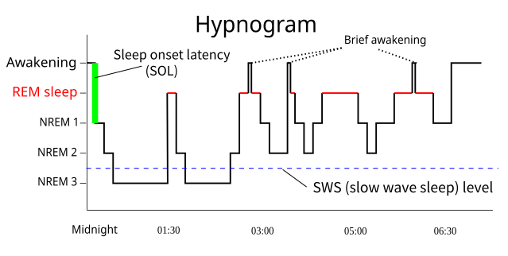

"明明睡了8小时，为什么还是很累？""为什么有时候睡6小时反而精神更好？"这些困惑背后，隐藏着睡眠的复杂密码。AZ Ring的AI算法就像一位24小时不眠的睡眠专家，通过解读你身体发出的微妙信号，为你揭开睡眠质量的真相。
多维数据融合：身体发出的睡眠信号

睡眠监测的多维数据源：心率变异性、体动信号、体温变化的综合分析
心率变异性（HRV）：自主神经系统的窗口
心率变异性是睡眠分析的核心指标，反映了自主神经系统的活动状态：
- 交感神经活动：清醒和浅睡期，HRV较低，心率相对稳定
- 副交感神经主导：深睡期，HRV增高，心率变化更明显
- REM期特征：HRV呈现特殊的波动模式，类似清醒状态
- 个体差异校正：算法会学习每个人的HRV基线，提高识别准确性
体动信号：睡眠深度的直接指标
通过三轴加速度计捕捉的体动信号，为睡眠分期提供重要依据：
- 微动检测：检测0.004g级别的微小动作，识别睡眠中的翻身
- 动作模式分析：区分有意识动作和无意识睡眠动作
- 频率域分析：不同睡眠阶段的体动频率特征不同
- 持续时间统计：静止时间长短反映睡眠深度
体温变化：生物钟的温度密码
体温的微小变化揭示了生物钟和睡眠周期的关系：
- 核心体温下降：入睡前体温开始下降，促进睡意产生
- 最低点识别：深睡期体温达到最低点，通常在凌晨4-6点
- 上升趋势：体温开始上升预示着即将自然醒来
- 环境补偿：算法会排除环境温度对体温测量的影响
AI算法架构：从数据到洞察的智能转换
睡眠分析算法流程
1
数据采集
2
预处理
3
特征提取
4
模式识别
5
睡眠分期
6
质量评分
数据预处理：从噪声中提取真实信号
原始传感器数据需要经过精密的预处理才能用于分析：
- 噪声过滤：使用卡尔曼滤波器去除传感器噪声和环境干扰
- 信号增强：通过小波变换增强微弱的生理信号
- 异常值检测：识别并处理由于佩戴松动等原因造成的异常数据
- 时间同步：确保多个传感器数据的时间戳精确对齐
特征工程：挖掘数据中的睡眠模式
从预处理后的数据中提取关键特征，为机器学习模型提供输入：
- 时域特征：心率均值、标准差、变异系数等统计特征
- 频域特征：通过FFT分析心率和体动的频谱特征
- 时频特征：使用短时傅里叶变换分析信号的时频特性
- 非线性特征：熵值、分形维数等复杂性指标
睡眠阶段识别：AI如何区分"深睡/浅睡"
清醒期
高心率变异性
频繁体动
体温相对较高
频繁体动
体温相对较高
浅睡期
心率开始下降
体动减少
容易被唤醒
体动减少
容易被唤醒
深睡期
最低心率
最少体动
体温最低点
最少体动
体温最低点
REM期
心率波动增大
体动模式特殊
梦境活跃期
体动模式特殊
梦境活跃期
睡眠质量评分：量化你的睡眠表现
入睡时间
算法通过心率下降和体动减少的组合模式，精确识别入睡时刻，误差控制在±3分钟内
睡眠效率
实际睡眠时间占在床时间的比例，健康成人应保持在85%以上
深睡比例
深度睡眠占总睡眠时间的比例，理想范围为15-20%
觉醒次数
夜间觉醒频率和持续时间，影响睡眠连续性和恢复质量
个性化基线学习：每个人都有独特的睡眠指纹
AZ Ring的算法会持续学习用户的个人睡眠模式，建立个性化基线：
- 基线建立：前7-14天的数据用于建立个人睡眠基线
- 动态调整：算法会根据季节、年龄、生活习惯变化调整基线
- 异常检测：识别偏离个人正常模式的睡眠异常
- 趋势分析：长期跟踪睡眠质量变化趋势
智能建议生成：基于数据的睡眠优化
算法不仅分析睡眠，还能提供个性化的改善建议：
- 就寝时间优化：根据个人生物钟推荐最佳就寝时间
- 环境因素分析：识别影响睡眠质量的环境因素
- 生活习惯关联：分析运动、饮食对睡眠的影响
- 渐进式改善：提供循序渐进的睡眠改善计划
算法准确性：与医疗级设备的对比验证
临床验证结果
AZ Ring的睡眠算法经过严格的临床验证，与多导睡眠监测（PSG）对比：
- 睡眠分期准确率：整体准确率达到87%，接近医疗级设备
- 深睡识别精度：深度睡眠识别准确率92%
- REM期检测：REM睡眠识别准确率85%
- 入睡时间误差：平均误差±2.8分钟
解开睡眠密码的意义
睡眠不再是黑盒子。通过AI算法的精密分析，我们终于能够理解"为什么睡不好"的真正原因。AZ Ring不仅是一个监测设备，更是一位懂你睡眠的智能伙伴，帮助每个人找到属于自己的最佳睡眠方案。